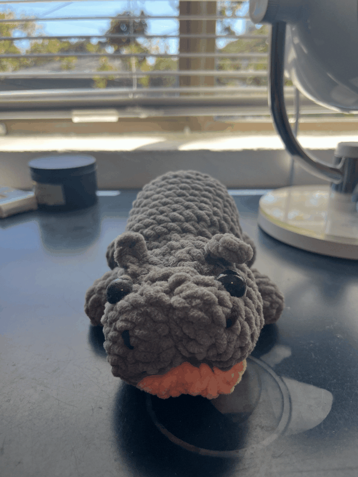

Part 1: Selfie: The Wrong Way vs. The Right Way
When a picture is taken up close, the lens uses a short focal length (wide angle),
which exaggerates the relative distances between features. This causes the distortion
in the first image.
Part 2: Architectural Perspective Compression
From far away with a zoom lens, distances appear compressed and the scene looks flattened,
while from close up with a wide lens, depth is exaggerated and objects look farther apart.
Part 3: The Dolly Zoom

The dolly zoom combines moving the camera forward or backward with the opposite zoom adjustment.
This keeps the subject the same size in the frame while dramatically changing the background
perspective, creating a surreal “stretching” effect.